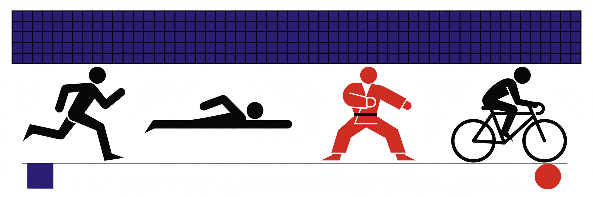
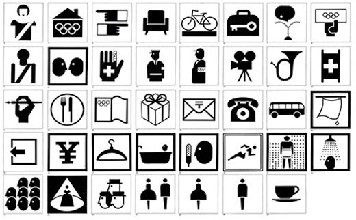
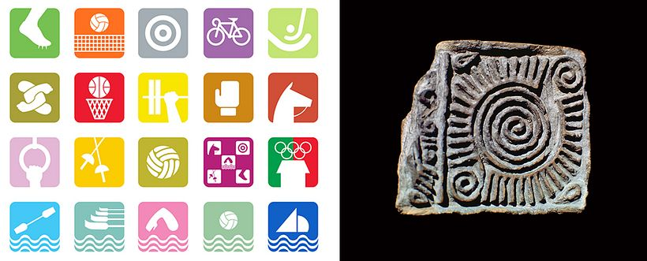
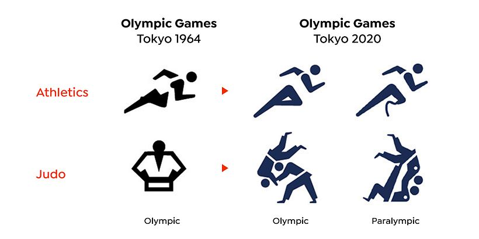
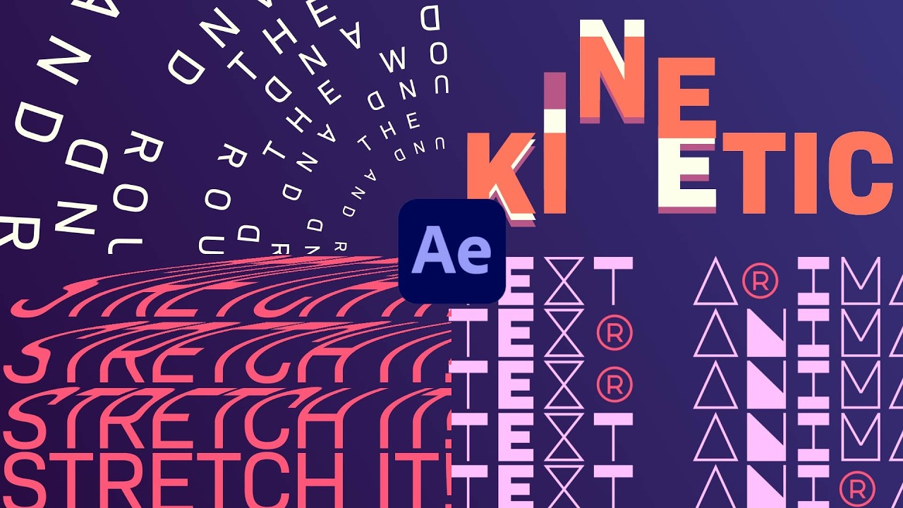
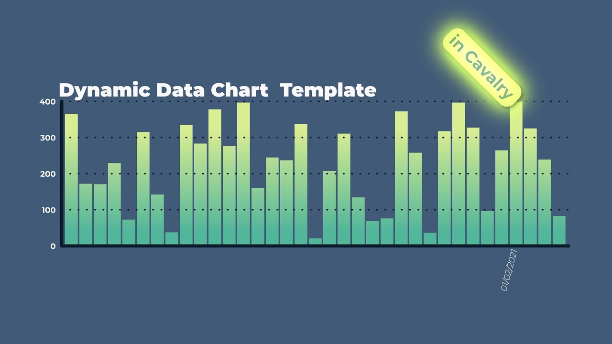

ニュース
今日のハイライト
- トップはAdvertising Week NY×Mekanism「Give AI a Break」。AIに休暇を与え、人間同士の対話へ——ChatGPT／Claude／Geminiを擬人化した60秒フィルムと、仕事を断るチャットボット「ChatGPTO」が話題。
- 広告＋モーション系は5本で約7割。Nike×PSGの感覚的なキット発表フィルムと、Swatch×デヴィッド・カーソンのタイポグラフィ・フィルムという、作り方が対照的な2本の広告が並んだ。
- その他は、太陽の頭の少年を描く2D短編、蜂の群れのCG短編、そして「AI風ポスターは実は手描き」というNeonの仕掛け。AIと手仕事の往復が、今日の通奏低音。
1. AIに休みを。広告界が「人間同士で話そう」と呼びかける
Advertising Week New York 2026とMekanismによるキャンペーン「Give AI a Break」。「AIに何でもやらせる」時代への皮肉として、AIに1週間の休暇を与える——仕事を頼むと断るチャットボット「ChatGPTO」、QRコード付きの屋外広告、そしてChatGPT／Claude／Geminiを疲れ切ったキャラクターとして描く60秒フィルム。AIを否定するのではなく「たまには画面を置いて、人と話そう」という提案で、広告業界のAI疲れを逆手に取った企画の好例。
2. Nike×PSG、キットの質感を音とスローモーションで見せる
Nike Footballとパリ・サンジェルマンによる、2026-27シーズンのホームキット発表フィルム。Free Practice制作、Marius Gonzalez監督、DIVISION／Paris。タイトなクローズアップとスローモーション、有機的なカメラワークでサポーターの熱とキットの質感を捉え、サウンドスケープが映像の官能性を引き立てる。スペックの列挙ではなく「着るものの手触り」を感覚で伝える、スポーツ広告の作り方の好例。
3. 太陽の頭の少年、2D短編が描く「多すぎる子」の神話
Andrea Szelesová監督の13分の2D短編『Eeny, Meeny, Miny, Moe!』。頭が太陽の少年イオスは、輝きすぎて友だちと遊べない——ミノアのフレスコ画から生まれた神々の子どもたちの遊び場を舞台に、「選ばれること」の両義性を描く。切り絵とフレーム・バイ・フレームの描画を組み合わせた手描きの質感、光が紙の建物を破るような触覚的な表現が光る。ベルリン映画祭とトライベッカで上映され、40以上の映画祭を巡回。
4. 蜂の群れが都市になる、CG短編『Quorum』
ベルリンのスタジオColors And The Kids（CATK）によるCG短編『Quorum』。ミツバチの群れが次の目的地を決める「定足数（クォーラム）」という生物学の概念を、都市＝巣箱という世界観で描く。白い穿孔ブロックのミニチュア都市と深い青の背景、蜂の「8の字ダンス」のリズム。道に迷った1匹の蜂を「失敗」ではなく発見の起点として描く構成と、有機的な動きが幾何学的な線へ、線がデータへと変わる変容の演出が、CGの表現力を示す。
5. デヴィッド・カーソンの混沌を動かす、Swatch「Destination NYC」
グラフィックデザイナーのデヴィッド・カーソンとモーションデザイナーのJoão Vaz Oliveiraによる、Swatchのローンチフィルム「Destination NYC」。カーソン特有の重ねられたタイポグラフィ、擦れたテクスチャ、破格のレイアウトを、Cinema 4DのClonerシステムで動く映像へ翻訳。約100点の時計デザインとスケッチをランダムに組み合わせ、試行錯誤で構成を絞り込む制作過程が、静止画の言語をモーションに移す際の参考になる。ニューヨークのエネルギーを映すポップアート的な時計コレクションの発表作。
6. MLB、5つの書体で100年の野球史を刷新
Mother Designによるメジャーリーグ・ベースボール（MLB）のブランド刷新。軸はタイポグラフィで、野球史に根ざした5つの特注書体を5人の書体デザイナーと開発した。Nick ShermanのMLB Franklin、David Jonathan RossとBethany HeckのMLB Clarendon、OH no Type Co.のMLB Script、Skye DillonのMLB Block、TipotypeのMLB Flare。1968年のバッターマークはそのままに、ホームプレートの五角形や球場の図形をグラフィック要素として抽出。歴史を「懐古」で終わらせず、現代のシステムとして動かすブランディングの好例。
7. AI風ポスターは実は手描きだった、Neon『Artificial』の仕掛け
ルカ・グァダニーノ監督、OpenAIを描く映画『Artificial』の公式ポスター。沈むゴールデンゲートブリッジ、顔のある木、蛇になる枝、逆さまの飛行機——一見AI生成の失敗作に見えるが、イラストレーターのMike ThompsonとGravillisが手描きで「AIの間違い」を再現したもの。Neonは公開数時間後に制作過程の動画を出し、隅の小さな文字「Artwork made by Humans」とともに人間の手仕事であることを証明した。AI時代の「手描きの証明」がマーケティングになる、示唆的な一枚。
特集 ― デザイン特集マガジン・第7号

言葉を捨てて、動きを描く
――ピクトグラム、東京1964から「動くピクトグラム」へ
空港のトイレ、非常口、エレベーターの人型。言葉を読まなくても意味が通じる記号を、私たちは毎日使っている。その出発点のひとつが、1964年の東京オリンピックだ。言葉の違う選手と観客を案内するため、スポーツを絵だけで示す「スポーツピクトグラム」が、公式に採用されたのはこの大会が初めてだった。56年後の同じ東京で、その記号はついに「動いた」。1964年の静止画から、1968年メキシコの色彩と身体の断片、そして2020年のキネティック・ピクトグラムまで。わずか数本の線で「何をしているか」を伝える技術の、60年の進化を追う。
勉強ポイント
- 「描かない」ことで伝える。 東京2020のルールは「頭は円」「胴体は抜く」。腹筋と腰のひねりは、胴体を描かないほうが伝わる。足す前に、まず何を引けるかを考える。
- まずルールを決め、次に描く。 角度、頭の形、色の数。ルールが先にあれば、50種描いてもひとつの家族になる。ルールなしのバリエーションは、ただのバラバラだ。
- 動きは「説明」ではなく「情報」にする。 キネティック・ピクトグラムは「現れる・止まる・消える」の3拍子だけ。動かすのは飾りではなく、競技の決定的な瞬間を見せるためだ。映像の絵コンテにも同じ順序が使える。
1964年、東京で生まれた「言葉のない案内」
ピクトグラムの起源は、1920年代のオーストリアにさかのぼる。哲学者オットー・ノイラートが、識字率の低かった第一次世界大戦後の人々に統計や情報を伝えるために考案した「アイソタイプ」だ。工場の中に靴を入れて「靴工場」を表すように、意味を組み合わせて絵にする考え方が、ピクトグラムの原型になった。
それがスポーツの公式な案内になったのは、1964年の東京大会だ。スポーツピクトグラム20種を描いたのは、グラフィックデザイナーの山下芳郎。大会開催が決まった1959年から描き始め、1960年には完成していたという。躍動感のあるものと静止したものが混ざり、ヨットに至っては人が入っていないなど、どこかバラつきがあるのは、一人のデザイナーが試行錯誤しながら描いた痕跡でもある。
会場案内の施設ピクトグラムは、また別の作られ方をした。赤坂の迎賓館の地下に当時の若手デザイナーが集められ、日夜作業を進めた。デザイン評論家の勝見勝がプロデュースし、田中一光、永井一正、福田繁雄、杉浦康平、横尾忠則らが召集され、お題ごとに何十枚も描いて一番いい形を選び出す。最終的にまとめたのは田中一光、木村恒久、広橋桂子の3人だったという。なお同じ大会のエンブレムとポスターを手がけたのは亀倉雄策で、ピクトグラムと並んで「言葉に頼らない大会の顔」が揃えられた。

ここで効いているのは、黒一色と枠の強さだ。色も陰影もない。遠くからでも読め、どの大きさに刷っても崩れない。のちに「ピクトグラムのHelvetica」と呼ばれることになる標準化の発想は、すでにこの時点で始まっていた。
1968年、メキシコが「身体の一部」で語ったこと
4年後のメキシコ大会で、ピクトグラムは大きく性格を変えた。手がけたのは、当時29歳のアメリカ人デザイナー、ランス・ワイマンだ。1966年11月、国際コンペに勝ってメキシコに渡り、パートナーのピーター・マードックらと2年かけて大会のグラフィック全体を作り上げた。五輪の5つの輪の幾何学から「68」の数字を生み出し、その平行線をロゴから書体、ユニフォーム、切手、気球にまで広げた。
ピクトグラムも同じ発想だ。全身の棒人間を描くのをやめ、競技を象徴する「身体の一部」か「道具」だけを切り取った。足首とスパイク、グローブ、馬の頭、自転車の車輪。先住民の石刻や金細工に残る文様を手本にし、会場ごとにメキシカンピンクやオレンジ、ターコイズといった彩度の高い色を割り当てた。色そのものが道案内をする。言葉が読めなくても、色と形だけで会場が分かる。

この仕事の射程は、大会の会場を越えた。ワイマンは同じ発想で、1969年に開業したメキシコシティ地下鉄の駅シンボルも設計している。駅ごとに土地の歴史や名物から採ったピクトグラムを置き、文字が読めない人でも乗り換えられるようにした。ピクトグラムは「大会の飾り」から「都市のインフラ」へと変わった。
その流れは、1974年のアメリカで制度になる。運輸省（DOT）がAIGAに委託し、ロジャー・クックとドン・シャノスキーが空港や駅のための標準ピクトグラム34種を設計した。審査委員会にはトーマス・ガイスマーやマッシモ・ヴィネリらが名を連ね、1979年に16種が追加されて計50種になった。今日トイレや非常口で見かける人型の多くは、この系譜の上にある。
2020年、ピクトグラムが「動いた」日
56年ぶりの東京大会で、ピクトグラムは原点に立ち返った。開発を率いたのはグラフィックデザイナーの廣村正彰。田中一光デザイン室に11年在籍し、1964年の話を田中から直接聞いていた人物だ。チームで2年をかけ、オリンピック33競技50種、パラリンピック22競技23種、計73種を開発し、2019年3月12日に発表した。
方向性を決めるまでが、まず難しかった。ひらがなをモチーフにする案、鳥獣戯画の動物を当てる案、漫画やアニメのキャラクターを使う案、折り紙や鉄器を手本にする案。十数種類の検証の末に選ばれたのは、「1964年をリスペクトする」という案だった。そこからは厳しいルールの設計だ。頭部は円形に統一する（ヘルメットなど、被らなければ成立しない競技だけ例外）。「なるべく省けるものは全て省く」という精神で、胴体は描かない。腹筋の状態や腰のひねりは、胴体を抜いたほうが伝わる。ボクシングやゴルフのように上半身だけで成立する競技は、下半身を省略する。柔道は道着を着せて競技らしさを出す。ルールに縛られすぎず、競技らしさを優先する柔軟さも、ルールのうちだった。
そして各競技団体との確認が、何度も繰り返された。セーリングでは左右の腕の役割、馬術では高得点につながる馬の頭の角度、パラリンピックのシッティングバレーでは「お尻が床についていること」を描けているかどうか。IOCのデザインディレクターの確認も段階を追って続いた。廣村は「競技への理解を深めながら作っていった」と振り返る。
静止画の完成からさらに1年以上をかけ、モーションデザイナーの井口皓太がこれを「動くピクトグラム」にした。2020年2月26日に発表されたキネティック・スポーツピクトグラムは、大会史上初の試みだ。動きの文法は「現れる・止まる・消える」の3拍子。断片化した形が現れ、静止画の姿で一瞬止まり、また断片になって消える。2秒ほどのあいだに、競技の決定的な動き――ひねり、跳躍、投げ――を立体的に再現する。開会式では、パフォーマーがこのピクトグラムをひとつずつ身体で再現する演出も行われた。

陸上と柔道を並べると、60年の変化が一目で分かる。1964年の陸上は、前に倒れ込む身体の塊で「速さ」を表していた。2020年の陸上は、脚の開きと腕の振りで「走っている途中」を切り取る。柔道はもっとはっきりしている。1964年は道着を着て構えた静止像。2020年は投げの瞬間そのものだ。描く対象は同じでも、「何を描くか」が「構え」から「動き」へ移った。
ピクトグラムの60年は、引く技術の歴史だった。言葉を捨て、色を捨て、胴体を捨て、最後に静止まで捨てた。残ったのは、競技の決定的な瞬間だけだ。だからこそ、記号はどこまでも軽く、どこにでも運べる。映像のカットも同じで、伝えたい瞬間がひとつに絞れていれば、画面は説明を必要としない。
出典
- 高島屋史料館TOKYO企画展Vol.4 セミナー1「デザインとピクトグラム」廣村正彰（2019年11月16日） https://www.takashimaya.co.jp/base/pc/shiryokan/tokyo/pdf/arc_vol004_sem01.pdf
- モリサワ文字文化フォーラム 第28回「ピクトグラム その機能の役割」（廣村正彰） https://www.morisawa.co.jp/culture/forums/reports/4872
- International Paralympic Committee「Tokyo 2020 unveils kinetic sport pictograms – a Games first」（2020年2月26日） https://www.paralympic.org/news/tokyo-2020-unveils-kinetic-sport-pictograms-games-first
- Wikipedia「2020 Summer Olympic pictograms」 https://en.wikipedia.org/wiki/2020_Summer_Olympic_pictograms
- Olympics.com「A truly iconic look」（2024年5月13日） https://www.olympics.com/ioc/news/a-truly-iconic-look
- Domestika「How the Olympics Helped Popularize Pictograms」（2021年7月22日） https://www.domestika.org/en/blog/8332-how-the-olympics-helped-popularize-pictograms?exp_set=1
- 99% Invisible「Mexico 68」（Director's Cut） https://exchange.prx.org/pieces/209210?m=false
- AIGA「Symbol Signs」 https://www.aiga.org/resources/symbol-signs
- Eye Magazine「Year of the pictograms」 https://www.eyemagazine.com/blog/post/year-of-the-pictograms
AE／Cavalry チュートリアル・表現コーナー
文字と数字を“仕組み”で動かす
AEはキネティックタイプの4つの手口、CavalryはCSVから動くチャートのテンプレート化
文字を伸ばす・回す・弾ませる ― 4 Unique Kinetic Text Animations in After Effects | Tutorial

タイムディスプレイスメントで文字を引き伸ばす、円形パスに沿わせる、エクスプレッションで文字をランダムに入れ替える、タイプツールでバウンスさせる——キネティックタイプの4つの技法を短時間で紹介するチュートリアル。
表現ポイント：核は「テキストレイヤーを“素材”として変形させる発想」。引き伸ばしやパス沿い配置など、1つの文字を何通りにも料理する手口は、タイトルやキャッチコピーのバリエーション出しに直結する。
CSVを差し替えるだけでチャートが動く ― Creating Dynamic Data Charts Templates with CSV Data in Cavalry

CSVデータを読み込み、棒グラフのチャートをレスポンシブなテンプレートとして組む1時間超のミニコース。Value Arrayをマスターコントローラーにし、全体をわずか6キーフレームで駆動させる。プロジェクトファイル付き。
表現ポイント：核は「数値をデータとして捉え、流し込む設計」。データが変わっても作り直さないテンプレート思考は、数字の多い広告・インフォグラフィックス案件で効く。Sub-MeshやComparisonノードの使い方も学べる。
今日試すなら：まずAEのキネティックタイプから。4つのうち1つだけ真似すれば、今日のタイトルが一段変わる。